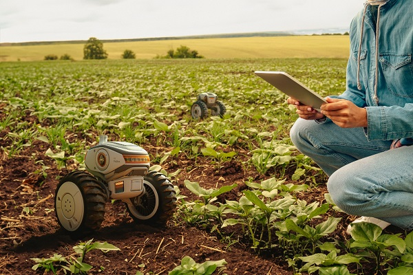
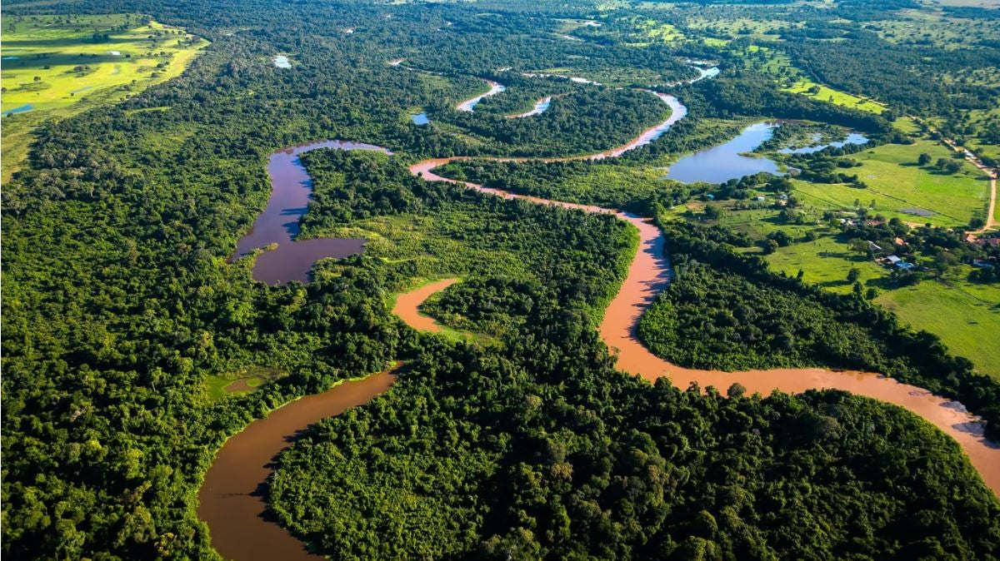
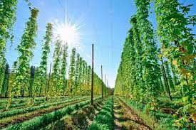

🚜 Inovação no Agronegócio
Descubra mais
Ferramentas digitais, drones e equipamentos modernos ajudam os produtores a utilizar recursos de forma eficiente, aumentando a produtividade e reduzindo impactos ambientais.

🌳 Natureza Protegida
Descubra mais
A conservação dos rios, das florestas e da biodiversidade é fundamental para garantir equilíbrio ecológico e qualidade de vida para as próximas gerações.

🌾 Cultivo Responsável
Descubra mais
Práticas agrícolas conscientes permitem produzir alimentos de qualidade enquanto preservam o solo, a água e os recursos naturais necessários para o futuro.